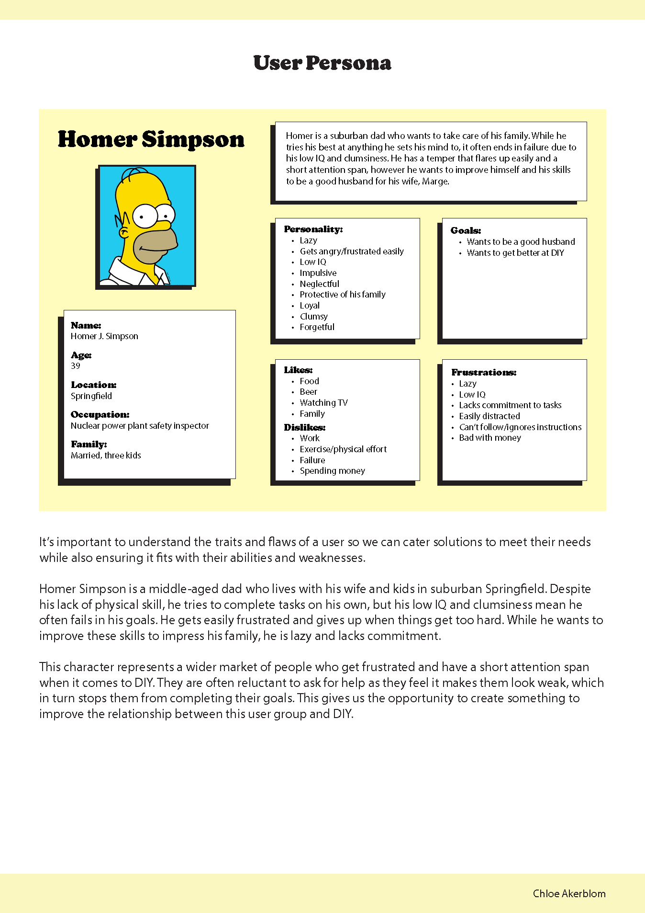
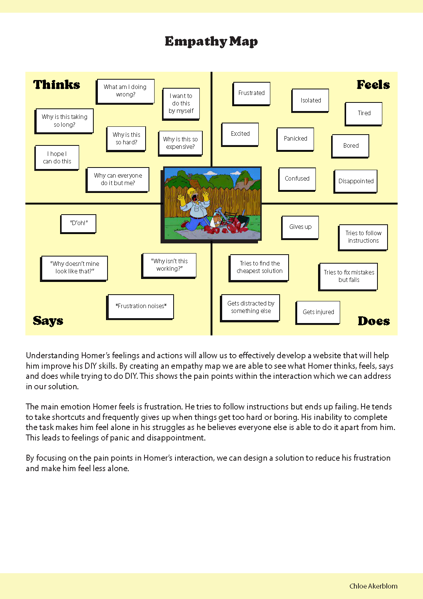
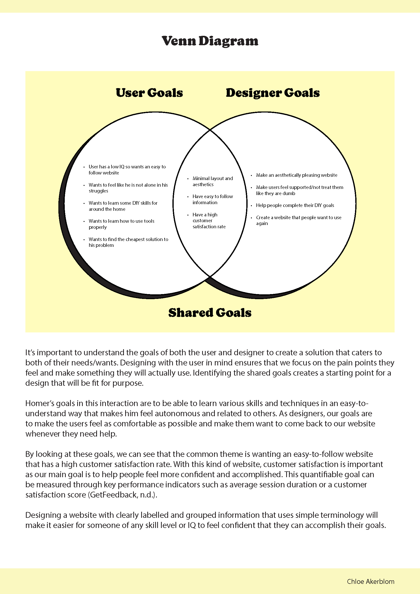
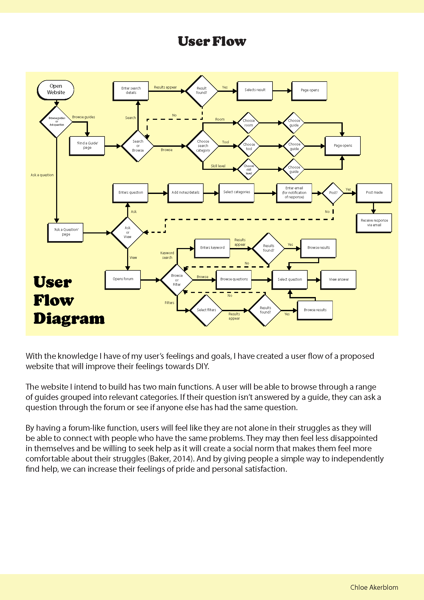
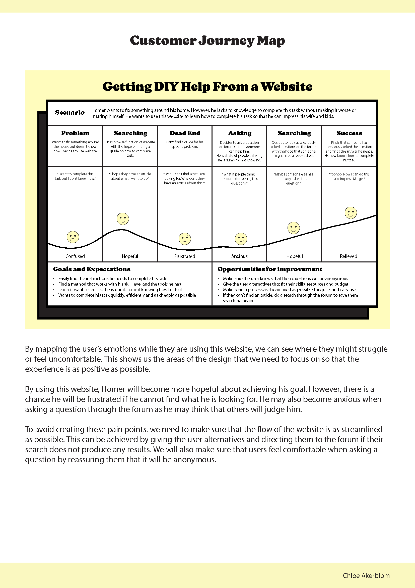
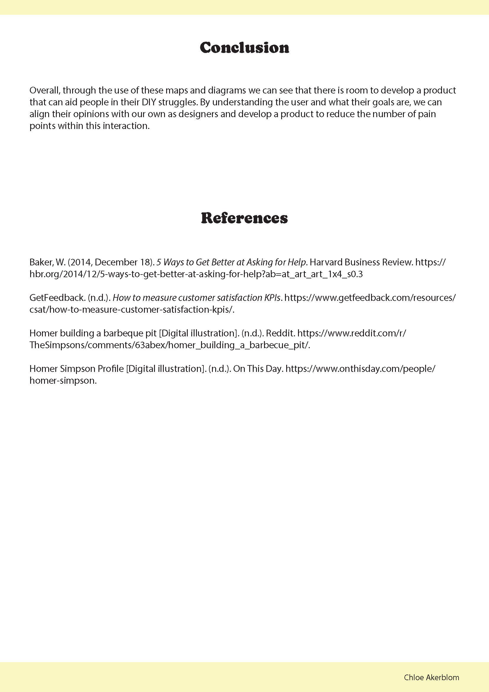

Today I added the final touches to my report, adding some information to ny venn diagram page based on the feedback I received. I have now completed my report and have handed it in.
     Overall, I am really happy with how this project has gone. I have enjoyed researching my user and thinking about their feelings and goals to help them improve a pain point within their daily life. I feel that this project will help me when completing the next assignment as I now have an idea of what my website needs to achieve and the key things to focus on. I also now have a wider range of tools I can use to help understand my user for future projects.